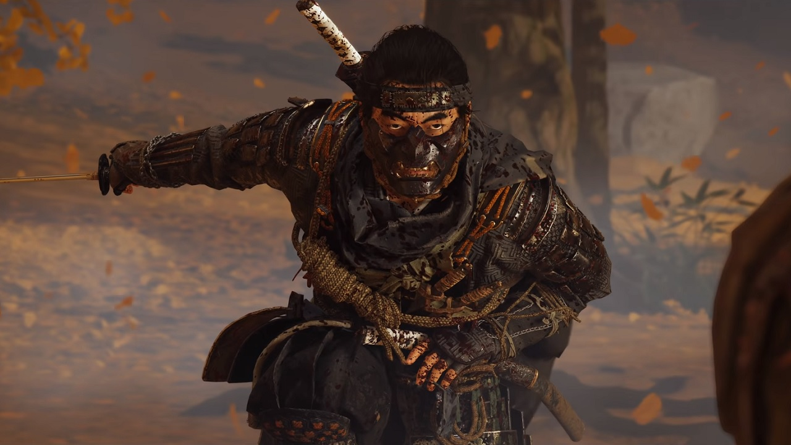
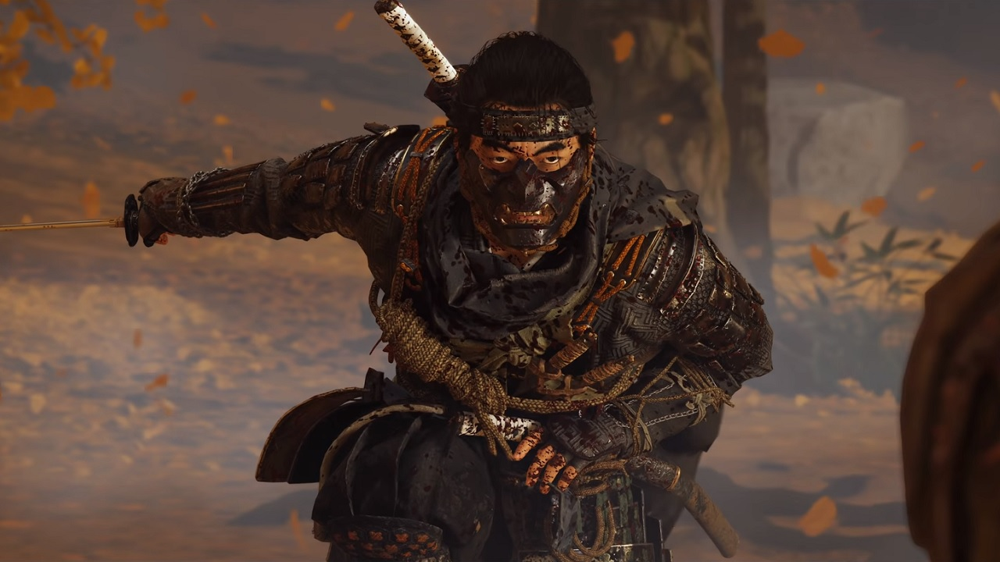

GHOST OF TSUSHIMA
Director's Cut Repository
Director's Cut Repository
 

In the late 13th century, the Mongol empire has laid waste to entire nations. As one of the last remaining samurai, Jin Sakai must go beyond tradition to protect his home. Forge a new way of fighting—the way of the Ghost—to wage an unconventional war for the freedom of Tsushima.
⚔️ Begin Journey (75GB)Operating System
Windows 10 / 11 (64-bit)
Processor (CPU)
Intel Core i5-8600 / AMD Ryzen 5 3600
Memory (RAM)
16 GB RAM
Graphics (GPU)
NVIDIA RTX 2060 / AMD RX 5600 XT
Storage
75 GB SSD (Required for fast loading)